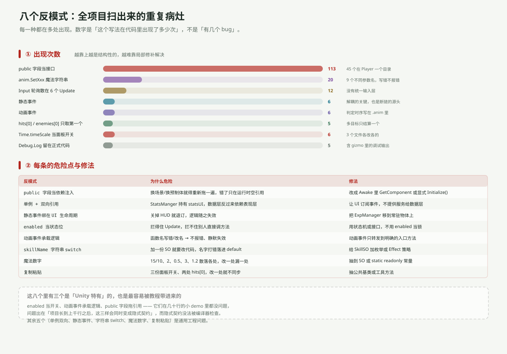

一句话说清
这八个不是八个 bug，是八种会不断复发的写法。每修一个 bug，如果不改写法，下次还会长出新的。
其中三个是 Unity 特有的（enabled 当开关、动画事件承载逻辑、public 字段拖引用），也是最容易被教程带进来的。
出现次数

| 反模式 | 次数 | 最集中的地方 |
|---|---|---|
| public 字段当接口 | 113 | Player 一个目录 45 个 |
anim.SetXxx 魔法字符串 | 20 | 9 个不同参数名 |
Input 轮询散在多个 Update | 12 | 6 个文件 |
| 静态事件 | 6 | 5 个文件 |
| 动画事件 | 6 | 近战 2 / 远程 5 剪辑共用 / 敌人 3 |
hits[0] 只取第一个 | 5 | 战斗 2 处 + 拾取 |
Time.timeScale 当开关 | 6 | 3 个文件 |
Debug.Log 留在正式代码 | 5 | 含 gizmo 里的调试输出 |
① public 字段当依赖注入（113 次）
public Player_Combat player_Combat; // PlayerMovement 里
public InventoryManager inventoryManager; // ShopManager 里
public StatsUI statsUI; // StatsManger 里为什么危险：这些字段的值不在代码里，在场景文件里。所以：
- 换场景 / 换预制体 → 全部重新拖一遍
- 漏拖一个 → 运行时
NullReferenceException，编译期完全看不出来 - 代码读起来「这个字段从哪来的」无法回答
修法（按成本递增）：
- 同一物体上的引用 →
Awake()里GetComponent<T>()（Enemy模块已经是这么做的） - 跨物体的引用 → 提供
Initialize(T dep)，由上层显式传 - 真需要全局的 → 单例或事件，而不是拖
Enemy 模块和 Player 模块正好是两个极端：前者 237 行只有 7 处 GetComponent、15 个 public 字段；后者 462 行 45 个 public 字段。同一个项目里有两套接线习惯，这是最该先统一的。
② 单例 + 双向引用
// StatsManger（数据层）
public StatsUI statsUI;
public void UpdateSpeed(int amount)
{
speed += amount;
statsUI.UpdateAllStats(); // ← 数据层反过来命令表现层
}为什么危险：数据层本该不知道 UI 存在。现在它俩互相持有——StatsUI 读 StatsManger.Instance，StatsManger 又持有 statsUI。
于是「谁负责刷新面板」这件事没有唯一答案：Start() 刷一次、UpdateSpeed 刷一次、UpdateHealth 不刷。同一个类里三个方法，三种命运。
修法：StatsManger 改发事件（OnStatsChanged），StatsUI 订阅。数据层从此不认识 UI。
③ 静态事件裸调用 + 订阅绑在 UI 生命周期上
// 发布方：Enemy_Health
OnMonsterDefeated(expReward); // 没有 ?.
// 订阅方：ExpManager（挂在 ExpCanvas 上）
private void OnEnable() { Enemy_Health.OnMonsterDefeated += GainExperience; }
private void OnDisable() { Enemy_Health.OnMonsterDefeated -= GainExperience; }两件事叠在一起才是灾难：
- 裸调用 → 没有订阅者就抛异常 →
Destroy不执行 - 订阅写在
OnEnable/OnDisable，而宿主是 UI 物体 → 关掉 HUD 就等于退订
合起来：ExpCanvas.SetActive(false) → 事件没人听 → 敌人打不死。
修法：?.Invoke 是必要条件，不是充分条件。真正的修法是把 ExpManager 挪到常驻物体上，让它不随 UI 消亡。
④ enabled 当状态位
// Player_ChangeEqiupment
combat.enabled = !combat.enabled;
bow.enabled = !bow.enabled;为什么危险：enabled = false 只做一件事——让 Unity 不再调这个组件的 Update / OnEnable 等回调。它做不到：
- 阻止别人直接调
player_Combat.Attack() - 停掉已经启动的协程
- 让组件「不存在」
实际后果：Player_Combat.Update() 里的冷却计时会停，切回来时 timer 还是旧值；而 Attack() 照样能被外部调用。
修法：用状态机（WeaponState { Sword, Bow }）或接口，而不是翻 enabled。
⑤ 动画事件承载逻辑
全项目 6 个动画事件：
| 文件 | 时间 | 函数 | 干了什么 |
|---|---|---|---|
Slash.anim | 0.27 | DealDamage | 真正扣血 |
Slash.anim | 0.42 | FinishAttacking | 解除动画状态 |
Attack_Right.anim | 0.30 | Attack | Enemy_Combat.Attack()（+ 一个空转的同名方法） |
Attack_Right.anim | 0.59 | ChangeState ×2 | 把状态改回 Idle |
Archer_Shoot_*.anim | 出箭帧 | Shoot | Instantiate 箭 |
为什么危险：这份逻辑不在任何 .cs 文件里。
- 改函数名 → 动画事件静默失效（不报错）
- 只看代码 → 会以为
Attack()一调就掉血 - 换动画 → 手感跟着变，但没人知道为什么
修法：动画事件只调一个命名明确的入口（OnAnimationHitFrame()），入口里再分派；或者干脆用 AnimationClip.length 做计时。至少要有注释说明「这个时序在 .anim 里」。
⑥ 靠字符串匹配
// SkillManager
switch (skillName)
{
case "Max Health Boost": StatsManger.Instance.UpdateMaxHealth(1); break;
case "Sword Slash": combat.enabled = true; break;
default: Debug.LogWarning("Error" + skillName); break;
}为什么危险：skillName 是 SkillSO 上的一个字符串字段（人可以随便改）。打错一个字，就落进 default，只打一行 LogWarning——技能「点了没反应」。
现状：24 个格子挂了 4 份 SO，其中 2Boost / 3Boost 压根不在 switch 里，点满只是刷 LogWarning。
修法：给 SkillSO 加枚举或 SkillEffect 基类（MaxHealthEffect、Enemy…），用 ScriptableObject 装行为而不是装名字。
⑦ 魔法数字
| 数字 | 位置 | 含义 |
|---|---|---|
15 / 10 | Elevation_Entry/Exit | 玩家的排序号（进出山洞） |
2 | Player_Combat / Enemy_Movement | 攻击冷却 |
0.5 | Player_Bow | 出箭间隔 |
3 | ItemSo | 默认堆叠上限 |
10 / 1.2 | ExpManager | 经验门槛与增长 |
1 | ExpManager.LevelUp | 每级给的技能点（硬编码） |
最危险的是 15 / 10：10 隐含了「玩家的默认排序号就是 10」这个从未写下来的假设。玩家默认排序一变，走出山洞就钻到山后面去了——不报错，只是「看起来怪」。
修法：Entry 里先存 originalOrder = sr.sortingOrder，Exit 还原；其余数字搬进 SO 或 static readonly。
⑧ 复制粘贴
三份面板开关（StatsUI / ToggleSkillTree / ShopKeeper）几乎逐字相同：
Time.timeScale = 0;
canvasGroup.alpha = 1;
canvasGroup.blocksRaycasts = true;差异只有一处：ShopKeeper 还设了 interactable，另两个没设。这就是复制粘贴最典型的症状：三份里有两份少了同一行，而且谁也不知道哪份是对的。
两处 hits[0]（Player_Combat / Enemy_Combat）也是同源代码：都只结算数组第一个元素。
修法：抽 PanelManager（栈 + 引用计数）和一个 DealDamageInRadius() 工具方法。
三个 Unity 特有的，值得单独警惕
| 反模式 | 为什么在 Unity 里特别隐蔽 |
|---|---|
enabled 当开关 | 它的名字听起来像「启用/禁用」，实际只管回调调用 |
| 动画事件承载逻辑 | 逻辑存在 .anim 资产里，代码搜索搜不到 |
| public 字段拖引用 | 值存在场景文件里，git diff 看不到，只有打开编辑器才知道 |
它们的共同点：隐式契约，编译器检查不到。 在几十行的 demo 里都没问题；项目长到上千行后，这三样会同时变成「只有原作者知道怎么连」的知识。
一句话总结
八条里，第 ①③④⑤ 条是这次必须面对的（它们直接导致 P0）；第 ②⑥⑦⑧ 条可以排期。
判据只有一个：这段逻辑，能不能只读 .cs 文件就完整地看懂？ 只要答案里有「要看场景」「要看动画」「要记得先拖」，那就是一条债。
下一篇：如果重写——目录重组与六步迁移。